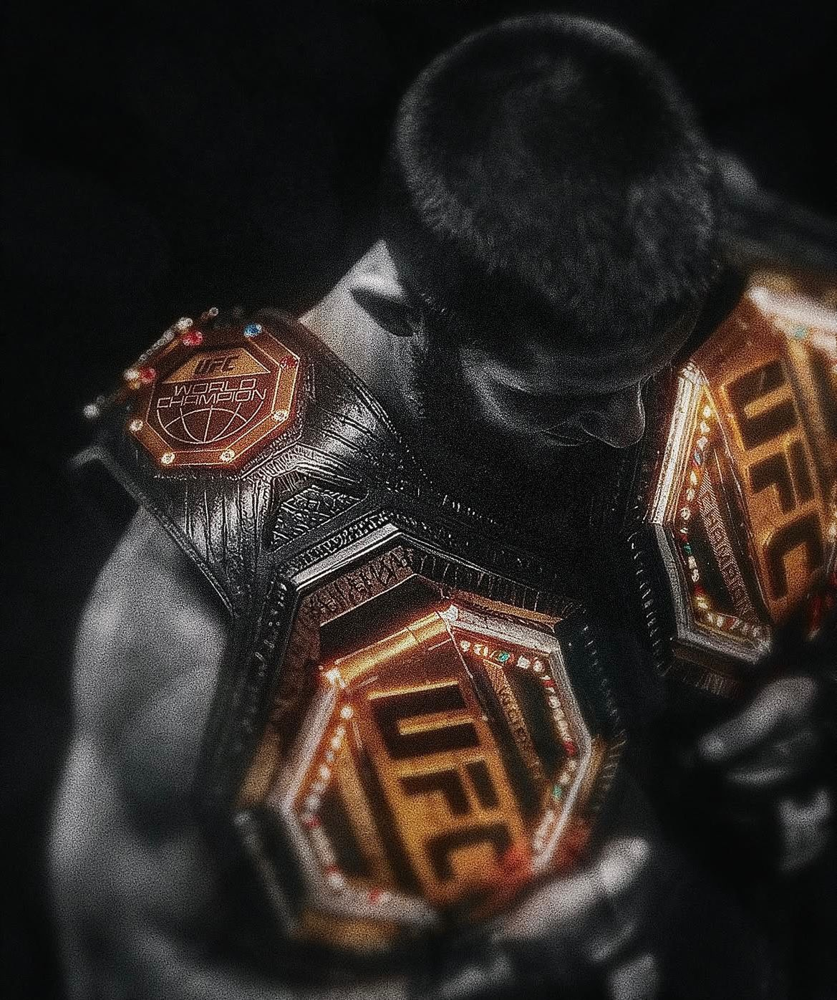
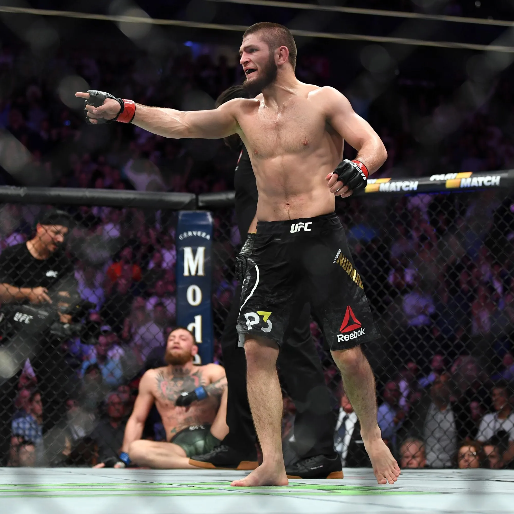
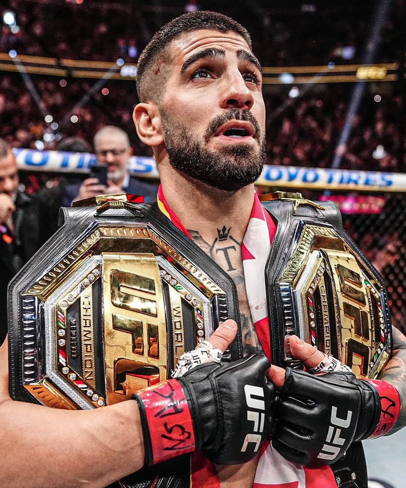
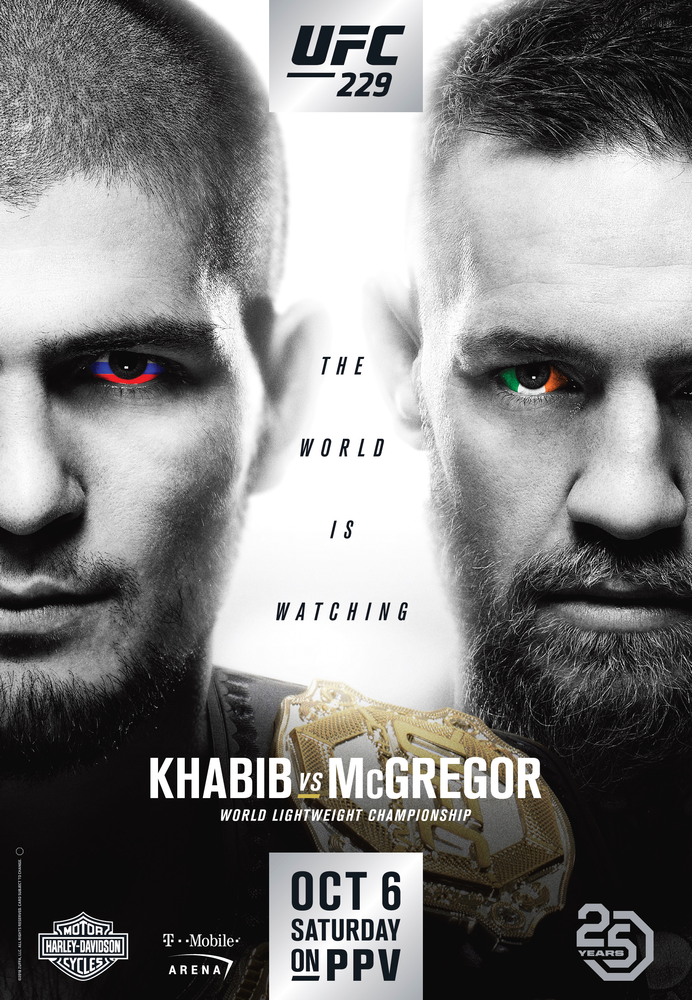
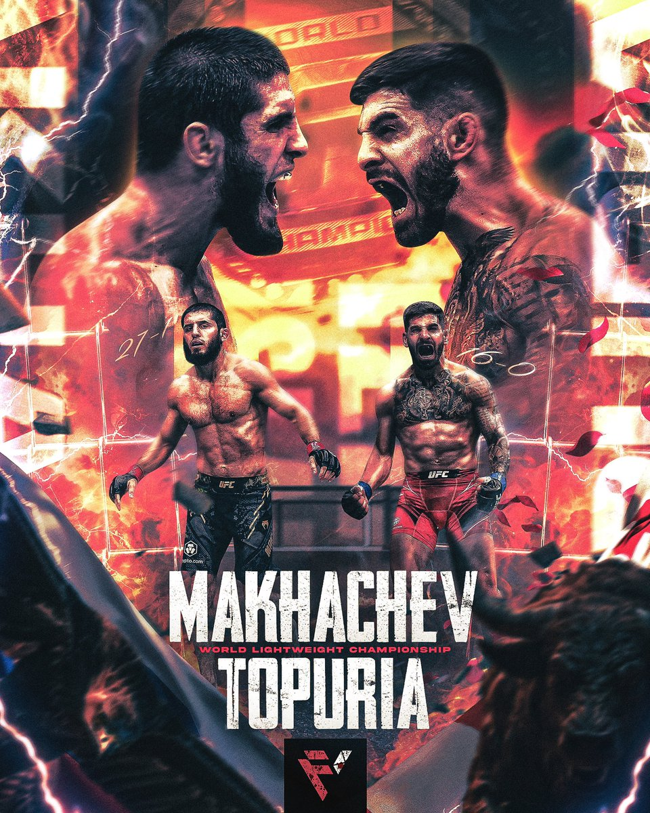

La UFC
La UFC (Ultimate Fighting Championship) es la mayor organización de artes marciales mixtas del mundo. En este deporte se mezclan distintas disciplinas como la lucha, el boxeo o el jiu-jitsu, lo que hace que los combates sean muy completos y diferentes entre sí. Este es un tema que me interesa mucho porque sigo la UFC desde hace tiempo y suelo ver los eventos importantes. Me gusta analizar los combates y fijarme en la técnica y en la estrategia de cada luchador.
Por qué me gusta la UFC
Me gusta la UFC porque no es solo pegarse, sino que requiere mucha preparación y cabeza. Cada luchador tiene un estilo distinto y debe adaptarse a su rival durante el combate. Además, es un deporte muy exigente físicamente y mentalmente, y eso hace que valore mucho el esfuerzo que hay detrás de cada pelea.
Mi luchador favorito histórico
Mi luchador favorito histórico es Khabib Nurmagomedov. Me parece uno de los luchadores más dominantes que ha habido en la UFC. Su control en el suelo era muy superior al de sus rivales y casi siempre llevaba el combate a donde él quería. También me gusta su mentalidad y el hecho de que se retirase invicto. Para mí es un referente dentro de este deporte.
Mi luchador favorito actual
Actualmente, mi luchador favorito es Ilia Topuria. Me gusta mucho su estilo de pelea porque es muy ofensivo y siempre busca finalizar el combate. Además, es un luchador que está creciendo mucho y cada vez tiene más protagonismo en la UFC, por lo que me resulta muy interesante seguir su carrera.
Mi pelea favorita
Mi pelea favorita es Khabib Nurmagomedov contra Conor McGregor. Fue un combate muy esperado y con mucha tensión antes de que se celebrase. En la pelea, Khabib demostró claramente su superioridad y dominó el combate, lo que para mí la convierte en una de las peleas más memorables de la UFC.
La pelea que más quiero ver en el futuro
La pelea que más me gustaría ver en el futuro es Ilia Topuria contra Islam Makhachev. Sería un enfrentamiento muy interesante por la diferencia de estilos entre ambos luchadores. Además, se ha hablado de que este combate podría tener mucha repercusión y sería una prueba muy importante para Topuria dentro de la UFC. 